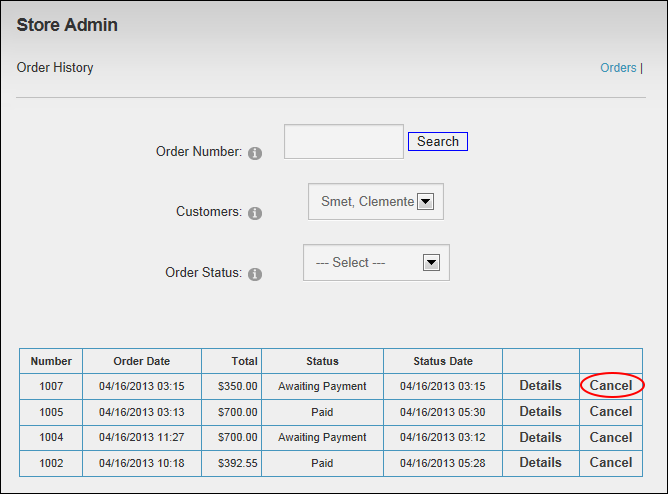

How to cancel one or more customer orders using the Store Admin module.
Prerequisite. "Authorize Cancel" must be enabled on the Store Admin module.
Note: Orders cannot be canceled once they have been dispatched, however they can be canceled following payment, in this case the associated role is removed. The Store module doesn't manage payment refunds. These must be managed using your back office payment system.
Option One:

Option Two: